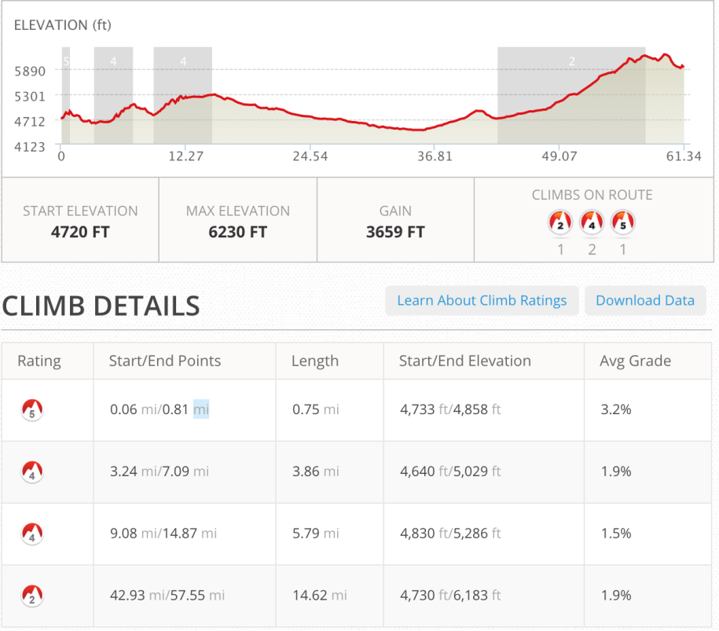
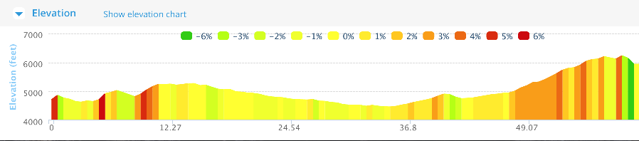
Glenwood to Silver City
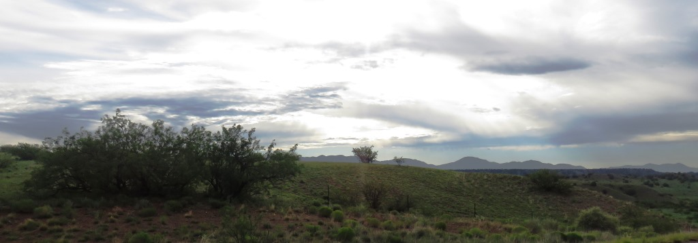
The morning with weather threatening
1

Glad I'm on the road
2
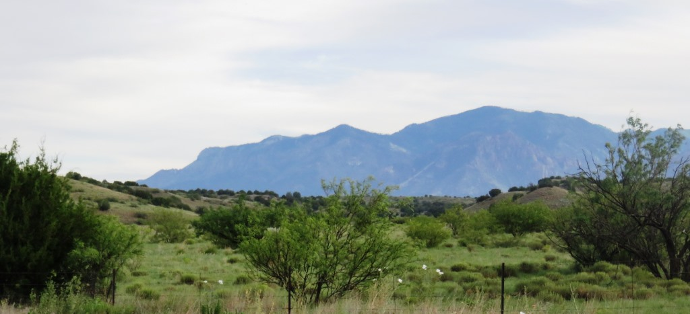
Gila Wilderness
3
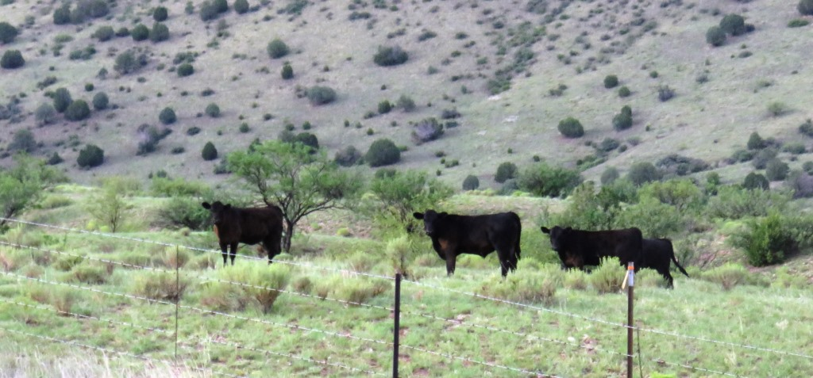
The cows were not concerned
4
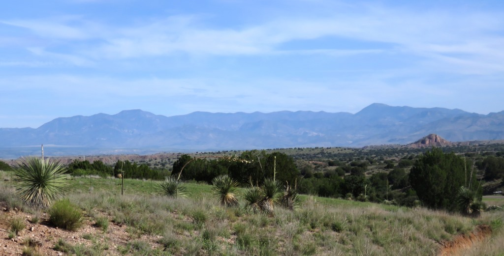
Mogollon Mountains to the eastRolling along west of the divide. Even the climb I had in front of me couldn't bother me. The final climb of the day and the ride was 1,500 feet over 15 miles.
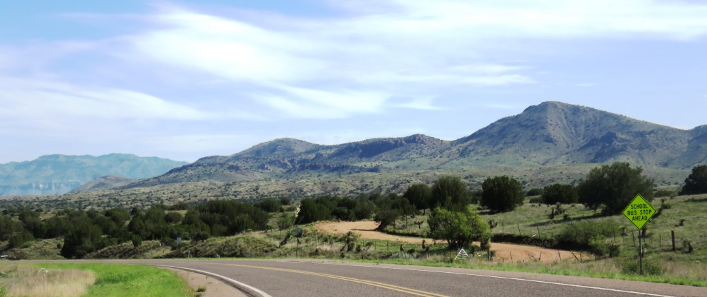
Looking westNo much left to say. It was a nice day, I thought I could be done by noon or so and I was on a hard track.
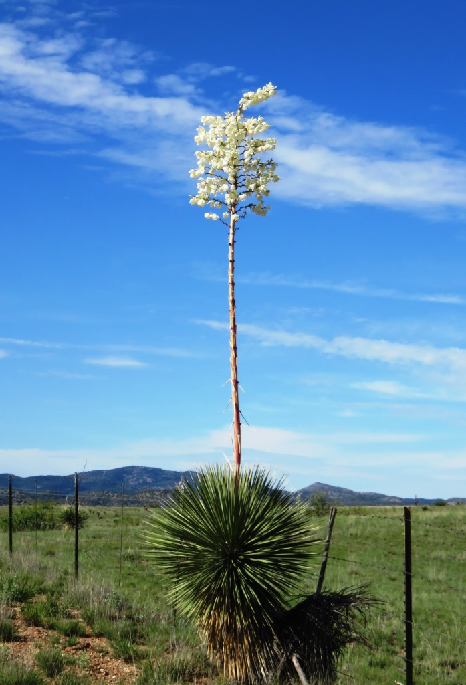
Yucca flaccida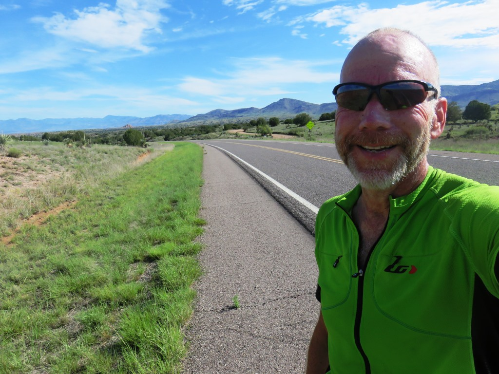
Easier to smile when you only have about 120 miles to go.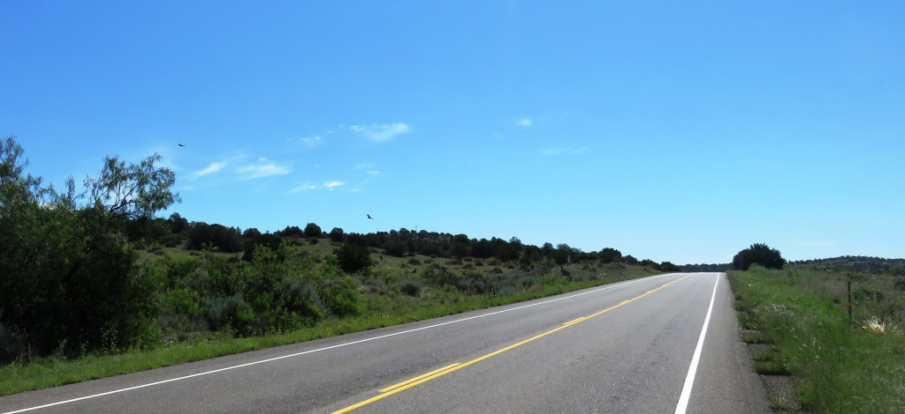
Birds circling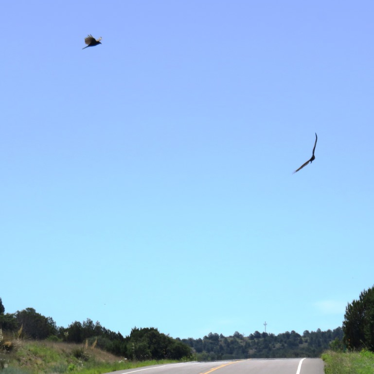
Really big crows/ravens waiting on a meal.I saw these birds circling from pretty far off. They would land but then get spooked when a car came by. When I final got up to there postion there was a bobcat which had been there for a while. I considered cutting off his tail but 59 yer old Jim realized it wasn't something I really needed.
The last divide crossing just outside of Silver City. It really was almost all down hill from here.
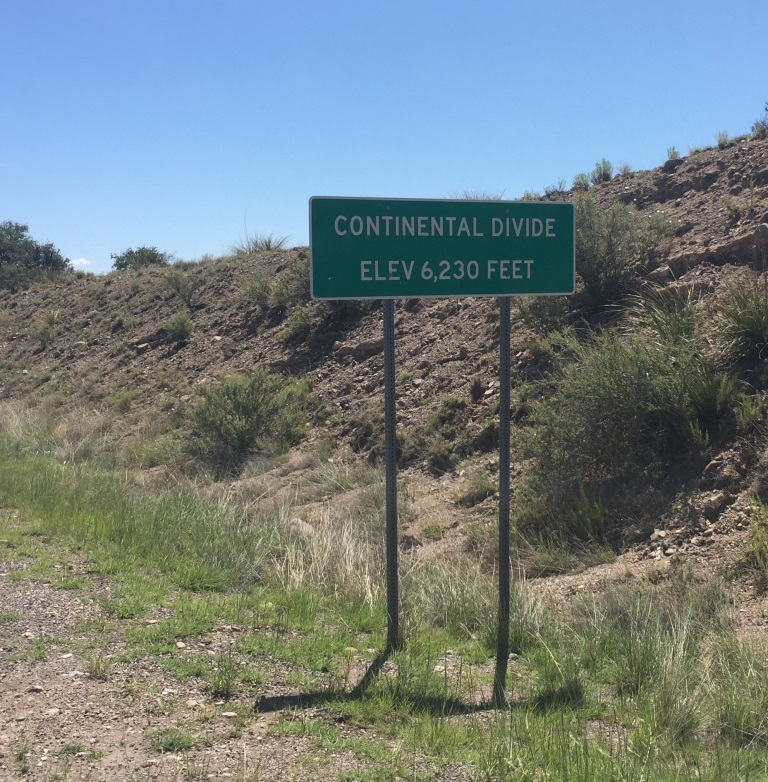
This was the last time I climbed up over 6,000 feetTaking the easy way
I arrived in Silver City about noon and went right to Gila Hike & Bike. Driving a Dodge truck into the Gila Wilderness sounded like a nice way to spend my afternoon. Enterprise was going to pick me up at the hotel but didn't arrive until 3pm. So even though the signs said the park was a two hour drive and it closed at 4 pm I went anyway and was not disappointed.
Driving up to the Gila Cliff Dwellings National Monument was a great treat. It was the first time in a month I was driving a vehicle and listening to music without air whistling (among other things) in my ears.
Gila Cliff Dwellings National Monument
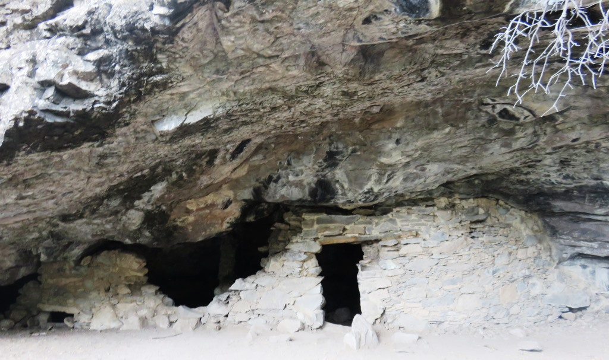
I stopped at the Visitor Center and even though they were just closing up the Ranger was very helpful in pointing me on my way. I didn't have time to visit the big cliff dwelling but there was one that was a short drive and a short hike away.
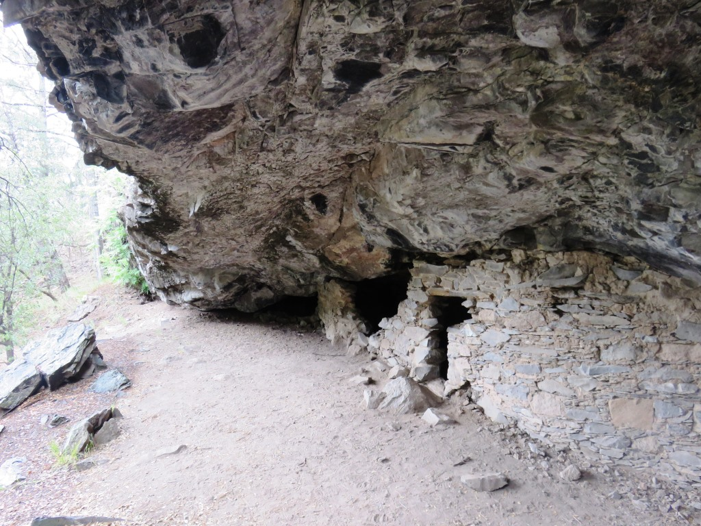
The door opening was about 3 feet.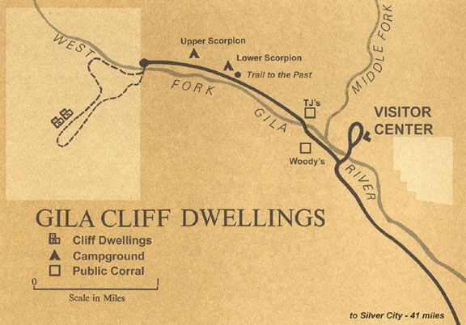
NP service mapHard to imagine that this was someone's home.
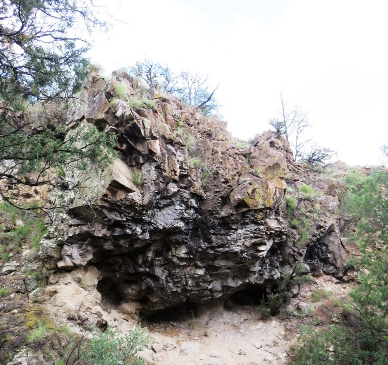
Hiking back to the car across from the cliff dwelling
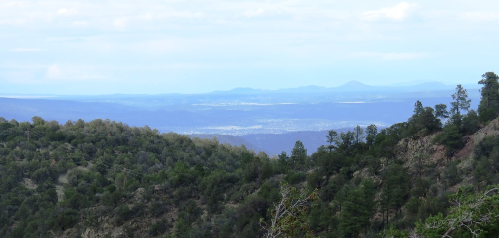
After 35 days still enjoyed looking at the mountains ...
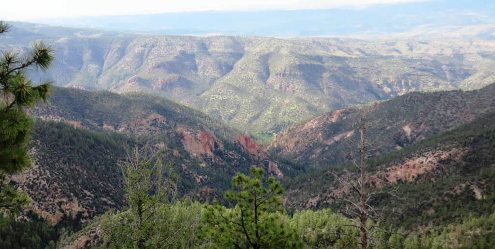
... and the various other formations that happened to pop into view.
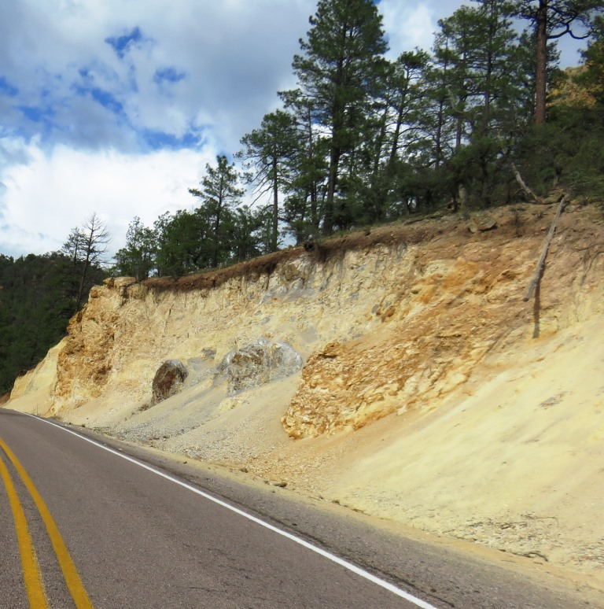
July 13 - 64 miles - Glenwood to Silver City. Plus 80 miles in a pickup.
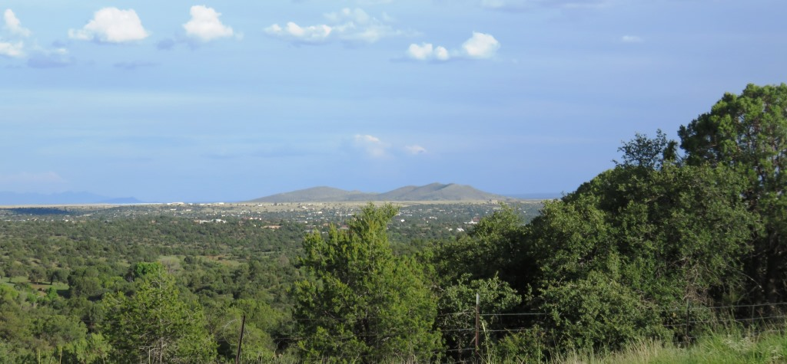
Looking south over Silver CityText by Jim O'Brien . Photographs by Jim O'BrienTD on Flickr.